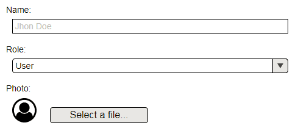

<p-dialog header="Edit" [visible]="true" modal="modal" width="540" [responsive]="true" (onHide)="closeDialog()">
  
  <p-footer>
    <button type="button" pButton icon="fa-check" (click)="closeDialog()" label="Yes"></button>
    <button type="button" pButton icon="fa-close" (click)="closeDialog()" label="No"></button>
  </p-footer>
</p-dialog>
